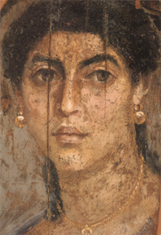

Les
cires utilisées comme liants
|
Les cires sont toutes réputées pour leur permanence, leur stabilité
dans le temps, moyennant certaines conditions de conservation. Elles ne sont
pas très résistantes au point de vue mécanique et sont assez
thermosensibles.
Pourtant elle présentent des avantages irremplaçables. Voir ci-dessous,
propriétés
spécifiques communes.
Le modelage et le moulage des cires sont évoqués
dans
un autre article.
Diluants, solvants,
dissolvants des cires
Diluants : essences, alcool
(éthanol). Pour une simple mise en solution, la chaleur est le meilleur
agent. Le mélange de cires, par exemple, peut donc être effectué par
simple réchauffement.
Accélérateur de séchage : le réfrigérateur !
Dissolvant : acétone.
Voir diluants,
solvants, dissolvants.
Les hydrocarbures benzéniques
seraient soi-disant d'excellents solvants des cires, prétendent certains
auteurs, mais en fait les essences non aromatiques
sont d'un emploi plus facile et infiniment moins nocif. Contrairement à ce que
prétendent les mêmes auteurs, nous avons constaté que la cire diluée
dans la térébenthine
se comporte infiniment mieux que dans le white
spirit ou toute essence minérale.
|
Sommaire
Modelage
et moulage des cires (externe)
Diluants,
solvants, dissolvants des cires
L'encaustique des ébénistes et la
cire des peintres
Liste
de cires
-
La
cire d'abeilles
-
La
cire de carnauba
-
La
cire de gomme laque de Coromandel
-
Les
cires synthétiques diluables à l'eau
-
Les
cires de Chine
-
Les
cires minérales, la paraffine
-
La cire de myrthe
-
Les
cires au silicone
La
cire de lanoline
La
cire de montan
Propriétés
spécifiques communes
La
cire comme liant : peinture à l'encaustique et cire saponifiée
-
Introduction
-
La cire
saponifiée
-
Procédés
à la cire non saponifiée
-
Application à chaud (rarissime)
-
Application à froid (encaustiques classiques)
*
Cas particulier de
l'imprégnation à froid
*
Patines,
encaustiques décoratives
*
En peinture
*
En dessin et
techniques mixtes |
Lors d'un réchauffement en présence de white spirit, on
constate une très suspecte carbonisation, certes résiduelle mais survenant très
rapidement. Cela semble démontrer qu'il y a dissolution (séparation d'éléments)
plus que mise en solution. Le white spirit peut cependant s'avérer un bon décirant.
Ajoutons que, dénuées
d'élément gras, les
essences minérales (mais aussi l'éthanol) provoquent une décantation et non une
dispersion, nous l'avons constaté en ce
qui concerne le white spirit et l'essence
de pétrole raffinée. Une essence minérale qui permettrait d'obtenir une
dispersion pourrait
être soupçonnée de contenir des éléments gras ou émulsifiants - en tout cas
suspects -
en proportion assez importante.
L'essence de pétrole raffinée peut quand
même être employée dans le cas précis de la préparation par
imprégnation à froid. Elle ne donne pas une
encaustique onctueuse, mais son avantage est de ne pas altérer le parfum de
la cire.
L'usage courant, depuis quelques
siècles, veut que l'on emploie la térébenthine,
riche en résines, visqueuse, empêchant la décantation.
La très odoriférante
essence d'aspic peut également être utilisée.
L'encaustique
des ébenistes et la cire des peintres
Les produits employés sont très
différents, de même que les procédés. Les peintres recherchent souvent un
produit ayant une grande solidité et recourent soit à un adjuvant tel que
l'huile de lin, soit d'emblée à une cire saponifiée,
plus proche d'une peinture "habituelle". L'ébéniste recourra à un
mélange pur d'essence et de cire le plus souvent. Il n'hésitera pas à frotter
les surfaces enduites pour bien imprégner le bois, pratique plus difficile à
envisager pour l'artiste - du moins d'une manière générale.
L'artiste peintre cherchera souvent à obtenir un matériau
relativement onctueux, "plastique" alors que l'ébéniste appréciera
plutôt un produit assez solide, relativement dur. Entre ces deux extrêmes,
on peut situer le peintre décorateur, toujours prêt à travailler sur des
surfaces plus vastes à l'aide de produits dilués.
Mais ne cherchons pas trop à classifier
les pratiques par métiers : tout est possible ! Le plasticien contemporain cherchera
surtout à choisir et adapter un produit à l'usage qu'il souhaite en faire. De
même, l'ébéniste et le décorateur utilisent aussi bien la cire saponifiée que
l'encaustique en fonction du travail à effectuer.
Liste
de cires
Il existe des centaines,
voire des milliers de cires. Cette liste est une simple sélection.
La cire d'abeilles (acide
cérotique,
éther myricilpalmitique) a une température de fusion de 62 à 70°C
(généralement 63 ou 64°C).
Faite des parois des cellules de la ruche, elle est
séparée du miel par un traitement à l'eau bouillante. Refroidie puis de
nouveau fondue, elle donne la cire vierge ou cire jaune,
employée pour la fabrication d'encaustique, de cirage et de cosmétiques
depuis l'Antiquité.
La cire jaune se décolore sous l'action des rayons ultraviolets.
Fondue à nouveau puis versée dans l'eau froide et
exposée à la lumière et à l'humidité, elle perd sa teinte jaune et gagne en
blancheur, donnant la cire blanche. C'est
celle-ci qui est employée dans les travaux artistiques et en restauration.
La cire d'abeilles serait parfois falsifiée ou coupé par ajout de suif ou
plus couramment, de paraffine, notamment dans les
produits dits "à la" cire d'abeille. Il faut
donc bien veiller à la qualité et la provenance de ce produit. Une cire
insaturée comme la cire d'abeille doit coller
légèrement lorsqu'elle est réchauffée pendant une dizaine de secondes entre le
pouce et l'index. C'est net : elle a du tirant, alors que la paraffine n'est
presque pas visqueuse dans les mêmes conditions.
Ayant reçu les témoignages de plusieurs peintres "victimes de la
cire", nous faisons écho de leurs avertissements : la cire d'abeilles,
cela fond vraiment, et même avant de fondre tout à fait, ça bouge !
Gare
aux spots dans les expositions, danger n°1, gare au soleil du mois d'août, et
n'emportez surtout pas vos travaux au Sénégal, à Tahiti... ou dans un métro
à pneus en été, par exemple.
Nocivité et conservation
Globalement non toxique (elle est employée dans l'industrie pharmaceutique),
elle peut quand même susciter des dermatoses.
Conserver évidemment à l'écart de sources
de chaleur. Exposée à un surchauffage ou à un chauffage prolongée, elle se
décompose.
Charge électrochimique
La cire jaune peut être assez acide. Il peut être utile de
tester son pH à l'aide de papier tournesol.
Il est possible de mettre à profit cette acidité de sorte à saponifier la
cire (voir plus loin).
Une bonne cire blanche doit avoir un pH neutre.

La cire de carnauba
- voir photo ci-contre
Dite aussi cire du Brésil, elle a pour principe chimique le céronate de
myricile. Elle fond entre 82 et
86°C, ce qui rend un peu difficile sa cuisson au bain-marie. Il faut
couvrir le récipient afin de gagner les quelques degrés supplémentaires
nécessaires à la liquéfaction complète ou mieux : faire fondre doucement à feu
direct (sans danger). Le nettoyage des contenants n'est pas très aisé. Il
faut remplir le récipient d'eau, le faire bouillir, le vider et répéter
l'opération plusieurs fois afin d'enlever la majeure partie de la cire avant de
poursuivre avec les nettoyants habituels.
La cire de carnauba est moins sensible à la température que la cire d'abeilles.
C'est son principal atout. Elle résiste aussi particulièrement bien à
l'humidité. Végétale, récoltée sur les feuilles des palmiers carnauba du
Brésil, elle est un peu plus dure que la cire d'abeille. Elle sert à la
fabrication de bougies, d'encaustiques et de quelques médiums et liants à peindre. Elle
est un peu moins mate que la cire d'abeilles.
Au contact direct avec les mains, elle présente beaucoup moins
de viscosité que la cire d'abeille.
Elle est peu ou pas acide, mais
cassante. Pour cette raison et pour élever
un peu le point de fusion des cires pour peintures décoratives, elle est souvent employée en mélange avec la cire
d'abeille.
ATTENTION : elle est beaucoup plus teintée que celle-ci,
c'est son principal défaut.
Sa coloration jaune
surprend car elle n'apparaît qu'à partir du moment où elle est liquéfiée. Aucun témoignage ne rend compte d'une aggravation
du jaunissement avec le temps.
La cire de carnauba est un produit utile et reconnu. Son emploi conjoint à
la cire d'abeille est presque systématique dans le domaine décoratif où
une proportion d'un tiers pour deux
tiers de cire d'abeille est courante. Mais sa coloration gênante la condamne,
dans le domaine artistique, à un usage tout à fait anecdotique.
Non toxique. Conserver à l'écart de sources de chaleur.
La cire de
gomme laque de Coromandel est
vraiment très dure. Selon nos sources, son point de fusion serait proche de
celui de la cire de carnauba (information non confirmée). Elle est surtout
employée en ébénisterie mais aucune raison ne justifie de la négliger pour
différents usages en arts plastiques ou décoratifs. Un court passage lui est consacré dans
l'article sur la gomme laque (cliquer
ici).
Conserver à l'écart de sources de chaleur.
Les cires synthétiques diluables à l'eau
sont utilisées dans la fabrication des crayons
aquarellables. Nous ignorons tout de leur composition et de leur processus
de fabrication. Il semble fort difficile de s'en procurer à l'état pur.
Peut-être ont-elles des points communs avec la cire
saponifiée.
Les cires de Chine ne semblent pas utilisées en peinture et autres
arts plastiques (si vous avez constaté le contraire, merci de nous
en informer). Leur
température de fusion est de 82°C.
Selon François Perego, leur origine
serait animale. Citons-le (p. 206) : « On a cru un certain temps qu'elle
était produite par l'arbre suite à la piqûre d'un insecte (...). », « La cire de
Chine est produite par la femelle d'une cochenille Coccus ceriferus, qui
se fixe sur les tiges ou les branches d'un frêne asiatique, Fraxinus
chinensis. »
Effectivement, André Béguin indique - mais
bien avant F. Perego - dans son Dictionnaire (t.I, p.206) une origine végétale
ou plutôt végétale et animale puisque selon lui ces cires apparaissent sur les
arbres en réaction à la piqûre de Coccus.
Miellat pouvant évoquer la laque dite de
coromandel ou résine végétale ? Qui croire de ces deux très grands auteurs ?
Sur un sujet aussi difficile car nécessitant une observation in situ, nous ne
pouvons accorder à l'une ou l'autre hypothèse plus de poids sans une observation
directe preuves à l'appui (photos, vidéos). Tout lecteur pouvant apporter ce
type de preuves est bienvenu à entrer en contact avec
nous.
Les larves des insectes seraient, selon François Perego, élevées au
Yunan, puis déplacées au Sichuan (cap. Chengdu) pour la production de la cire.
Il indique que « Des cires apparentées sont produites par d'autres
cochenilles extrême-orientales telles que Brahmea japonica, Erytherus pela (qui
donne la cire de Chine d'Echigo) et d'autres Coccidées donnant la cire de Chine
de Tsingtao. » (p.206).
Enfin, « En Extrême-Orient, elle sert entre autres pour le glaçage du
papier.
En Europe, cette cire de haute qualité est quasiment inconnue (...) »
(p.207).
Les cires minérales,
à savoir principalement la paraffine, la cire
microcristalline et les gels-cires ne sont pas des liants
(sauf peut-être la cire
microcristalline). Leur rôle dans les arts plastiques est à part. Elles
peuvent tantôt être moulées, tantôt colorées ou parfumées. Employées surtout actuellement dans la fabrication des
bougies et en sculpture (modelage, moulage, fonte des métaux), elle peuvent parfaitement être utilisées à
d'autres fins.
Lire
absolument l'article La cire de bougie, les cires
minérales : cires et sculpture.
La cire de myrte.
Elle n'est pas liante non plus mais peut trouver quelques applications dans le
domaine des arts plastiques. Lire l'article du glossaire.
Les cires au
silicone sont utilisées en ébénisterie comme substituts de la
cire d'abeille. Comme celle-ci, elles ne supporteraient pas de surcouche autre
que réalisée avec la même cire.
Elles seraient employées dans la fabrication de médiums
acryliques.
La cire de lanoline
est employée dans la fabrication de cosmétiques. Voir lanoline.
La cire de montan
ou cire de lignite est noire ou brune. Elle servirait dans la
fabrication de certains vernis.
Propriétés
spécifiques communes
La cire coagule au contact de corps froids, d'air tiède. Ce phénomène rapide est particulièrement utile pour "figer" certains processus
mécaniques plus lents, particulièrement en peinture à l'huile. Elle a notamment été utilisée par les maîtres
vénitiens pour compenser la lourdeur de la
litharge et peut-être de la céruse.
C'est de ce point de départ qu'est probablement né le médium
vénitien. La cire permet aussi, nous l'avons constaté expérimentalement, de freiner la
"chute" de certaines charges
transparentes comme la poudre de marbre et l'hydrate d'alumine.
Seule ou considérée à part dans un mélange, il est important de souligner
qu'elle reste toujours friable et réversible à la chaleur, aussi vaut-il mieux
l'employer en toutes petites quantités dans une pâte destinée à la peinture. Une
autre solution possible pour l'artiste consiste à s'en servir à la manière d'un
ébéniste ou d'un sculpteur réalisant une patine sur plâtre par exemple : tous
deux n'hésitent pas à étaler, frotter, lustrer leurs encaustiques. La variété
saponifiée fait cependant exception. Elle peut être appliquée avec des pinceaux,
comme un peinture habituelle.
Sauf en ce qui concerne les produits dits "minéraux" comme la paraffine, il est déplacé d'affirmer qu'une cire ne sèche jamais. On peut dire, pour faire court, que sa coagulation
n'est pas synonyme de siccativation, s'agissant de processus différents, et que
la structure obtenue après siccativation peut toujours être détruite par
réchauffement. La siccativation des cires ne peut être comparée avec celle d'une
huile à peindre, qui donne un résultat d'une solidité et d'une résistance
exceptionnelles. La comparaison n'a aucun sens. Cependant, moyennant de bonnes
conditions de conservation, les cires insaturées (abeilles,
carnauba, etc.) protègent réellement le pigment.
Il faut bien spécifier que, contrairement à la cire minérale (paraffine),
les cires végétales et animales ne sont pas saturées
et donc s'associent, une fois coagulées, aux autres corps. Ce processus
difficile à observer pourrait durer, selon les auteurs, assez peu de temps
(vingt-quatre heures selon certains, quelques semaines selon d'autres), le
reste du phénomène étant surtout le fait des corps avec
lesquels la cire est associée. Disons-le autrement : l'insaturation de
ces cires permet aux autres corps "actifs", liants, de "s'agripper" à elles, contrairement
à ce que l'on constate avec la paraffine, totalement rétive à toute
association. Mais répétons-le : il ne faut pas attendre d'une cire une siccativation
d'une qualité et d'une solidité comparables à celle de l'huile de lin.
En tant que corps gras, les cires semblent "nourrir" les bois,
supports solides auxquels elles sont bien adaptées. Elles peuvent d'ailleurs
servir de bouche-pores. Les cires pures ou simplement diluées
(encaustiques) doivent absolument être appliquées en couches fines
successives, à chaque fois lustrées, en respectant ce que l'on pourrait nommer
un "temps de séchage" de l'ordre de plusieurs jours ou semaines.
Travailler "en masse" ne donne aucun résultat satisfaisant. Les encaustiques ont besoin d'accrocher, d'imprégner leurs supports par couches extrêmement fines et
progressivement.
Autre propriété extraordinaire pouvant être mise à profit en arts
plastiques comme en ébénisterie et arts décoratifs : toutes les cires sont plutôt mates, mais on
peut les rendre satinées par simple frottement.
Enfin, une cire peut difficilement être recouverte par une autre
substance... qu'une cire. Même les corps gras tels que l'huile n'adhèrent pas
toujours. Dans certains cas (celui de la paraffine particulièrement), un réchauffement
est même nécessaire pour "souder" les couches de cire entre elles.
Pas de gros danger sur le plan de la sécurité. La cire n'est pas
inflammable : elle fond simplement, même à haute température (renseignement
pris auprès des Pompiers de Paris). Les cas d'allergies sont rares avec la cire
d'abeille, la cire de carnauba et la paraffine.
La cire comme liant :
peinture à l'encaustique et cire saponifiée
Introduction
Voir Diluants,
solvants, dissolvants, en tête de l'article
Utilisée dans l'Antiquité, l'encaustique s'est extrêmement bien conservée dans les tombes
égyptiennes des périodes ptolémaïque et ultérieures (art mortuaire du Fayoum). Il est vrai que les conditions de
fabrication et de conservation étaient particulièrement adaptées à sa thermosensibilité.
Le célèbre et vénérable portrait ci-dessous a presque deux mille ans. Il s'agit d'une
encaustique sur tilleul.

Cependant, cette sensibilité des cires à la chaleur et leur fragilité les ont, depuis
ces temps, pratiquement éliminées en tant que liant
à peindre employé pur ou presque pur. On notera quand même quelques oeuvres contemporaines de Jasper Johns par
exemple et les travaux de peintres utilisant la cire saponifiée.
Par contre, l'emploi conjoint de cires traditionnelles avec d'autres liants - sans parler des médiums
- a été largement exploité et est encore assez répandu. La cire est souvent associée à l'huile de lin qui l'assouplit
très légèrement
tout en la solidifiant et en lui donnant une tenue à la chaleur un peu meilleure.
La cire peut être employée conjointement à de la caséine
(ou même de la chaux) et bien sûr, de l'huile de lin et d'autres huiles à peindre.
Une utilisation marginale de cire non-minérale nous a été
décrite : il s'agit d'en faire une sorte de vernis à apposer sur une gouache
ou une aquarelle afin de créer un effet de satiné. On mentionnera aussi l'emploi
encore plus marginal du même type de cires pour l'application de réserves (cf.
article). Généralement, les cires minérales sont cependant préférées, pas
forcément à juste titre lorsque la réserve n'est pas destinée à être retirée.
Enfin il faut signaler les innombrables recettes de cires à
modeler et à tailler inventées par les sculpteurs. Certaines présentent des
ressemblances troublantes avec les encaustiques des peintres et des ébénistes.
Voir article.
La cire
saponifiée
Il existe des recettes où la cire
naturelle est saponifiée. L'agent majeur de
cette opération est le carbonate d'ammonium.
Exemple de recette :
Avertissement :
le dégagement de vapeurs ammoniacales rend nécessaire une
très bonne aération du local.
Il est conseillé de faire un courant d'air et même, si nécessaire, de porter
un masque (personnes allergiques ou atteintes de maladies respiratoires).
Ingrédients
140 ml d'eau
28 gr de cire d'abeille blanche
14 gr de carbonate d'ammonium
Procédé
* diluer le carbonate d'ammonium dans un
peu d'eau
* faire bouillir les 140 ml d'eau
* y jeter progressivement la cire tout en remuant
* incorporer le carbonate d'ammonium. La consistance doit devenir crémeuse
* continuer la cuisson
jusqu'à évaporation des vapeurs ammoniacales et laisser refroidir.
(traduit de l'anglais, Artist's
handbook of materials and techniques de Ralph Mayers)
Il est possible de se procurer des cires saponifiées prêtes à l'emploi sous
forme de flacons de liquide ou bien de copeaux à diluer dans l'eau bouillante
(magasins de fournitures Beaux-arts et ébénisterie).
La peinture obtenue a d'excellentes qualités picturales. Il s'agit d'une émulsion
maigre diluable à froid dans l'eau. Sa consistance est crémeuse. Elle est
fine.
Elle peut être travaillée une fois sèche avec un
micro fer à souder à gaz (information Hugues
Delberg, site EggTempera).
Ce liant est utilisé par des artistes professionnels et des
peintres décorateurs.
Il peut être enrichi d'huile de lin (lire
passage in Les liants émulsions).
Procédés
à la cire non
saponifiée
Voici, ci-dessous, deux types d'emplois de ces cires : à chaud et à froid.
Ils
sont relativement simples dans leur
principe mais nécessitent souvent un peu de jugement, de mesure, d'adaptation. Nous les publions en précisant que
tout compte-rendu d'adaptation à la cire de gomme laque ou d'autres
cires sera bienvenu.
Cliquer
ici pour accéder directement à la section
Application
à froid
Application à chaud
(rarissime)
C'est le contraire de la chaîne du froid : tout doit être chaud tant
la cire d'abeilles se fige au contact du froid. La cire de carnauba et la cire
de gomme laque ont une
température de fusion trop élevée pour être massivement employées de cette
manière - ou alors prévoir une combinaison ignifuge !
Il faut tout réchauffer :
*
le support. Dans le cas de statues d'argile, de plâtre, de toile, le
sèche-cheveux peut suffire.
*
les outils. On peut les passer sous l'eau chaude. Employer éventuellement
des gants pour éviter tout brûlure.
* la
surface de travail (palette ou autre)
* les pigments.
Il faut trouver un moyen de les chauffer sans les cuire
!
*
la cire d'abeille blanche, au bain-marie. Les autres cires ne peuvent être
employées car il faudrait encore élever la température !
*
l'atmosphère, qui doit être aussi saharienne que possible.
Mélanger cire et pigments sur la surface de travail bien chaude.
Application à froid (encaustiques classiques)
Pour fabriquer une pâte ou un liquide
à base de cire et de térébenthine utilisable à froid, il est plus aisé de
réaliser la préparation à chaud. Mais il nous a paru souhaitable d'évoquer la préparation à
froid par imprégnation qui est malgré tout très utilisée.
Cas
particulier de l'imprégnation à froid
Pour obtenir une encaustique d'une certaine homogénéité, la préparation
à froid est bien longue et
contraignante.
L'avantage principal de ce procédé est de permettre l'emploi
l'une essence minérale raffinée qui n'altèrera pas l'odeur de la cire.
Attention cependant : même réalisée par imprégnation, l'encaustique obtenue avec
l'essence minérale sera nettement moins onctueuse, moins grasse qu'une
encaustique réalisée avec une essence végétale.
Aucune méthode précise ne sera
explosée ici en détail car il en existe déjà un grand nombre qui sont
disponibles sur internet. En résumé, la cire est d'abord réduite en paillettes,
à l'aide d'une râpe par exemple. On la fait baigner dans l'essence pendant un ou
deux jours (fermer hermétiquement le contenant) puis on ajoute encore de
l'essence et ainsi de suite. De cette manière, on imprègne progressivement la
cire en exploitant ses propres capacités de liant.
Préparations à chaud
1 - Patines,
encaustiques décoratives. On utilise
principalement l'essence
de térébenthine. Pour
obtenir une encaustique plus "mordante" on mélange de
l'essence d'aspic à la térébenthine.
Il faut placer dans une casserole parfaitement propre environ...
* une part constituée
* d'au moins 1/3 de cire de carnauba et même de préférence
davantage lorsqu'il faut éviter la fonte intempestive sur les zones exposées
au soleil ou à la chaleur des lampes et radiateurs. Si le travail doit prendre
place dans un lieu bien à l'abri de ces dangers, on peut parfaitement s'en
passer : l'encaustique n'en sera que plus claire.
* au plus 2/3 de cire
d'abeilles si possible blanche si l'on souhaite réaliser une encaustique peu
colorée en elle-même
* une à cinq parts de térébenthine (la quantité a assez peu
d'importance, pouvant être modifiée à tout moment par la suite). On a pu
constater que l'essence de pétrole ne convient pas : elle provoque une
décantation. Elle ne produit que des encaustiques très dures.
* une part facultative
d'huile de lin, voire davantage. Plus le support est poreux et plus on
souhaite "patiner", faire vraiment pénétrer l'encaustique dans les pores,
moins l'huile est nécessaire. Le rôle de celle-ci étant de renforcer et
d'assouplir, elle s'imposera par exemple pour des supports légèrement
souples ou les travaux que l'on ne souhaite pas frotter et qui sans elle
s'effriteraient.
Faire chauffer doucement jusqu'à la fusion de la cire, qui survient assez
soudainement. C'est un processus assez rapide.

Attention :
vous faites chauffer de l'essence. Ce n'est pas sans
danger !
Il
est absolument nécessaire d'utiliser un réchaud sans flammes
Ne
pas fumer
Éviter
toute étincelle, toute flamme, toute incandescence
Travailler
en milieu calme
Être
présent pendant toute l'opération
Bien
aérer le local mais se tenir prêt à le clore immédiatement au
moindre incident
Repérer les
extincteurs les plus proches, s'assurer de la proximité d'un téléphone en
service.
Vous obtenez une encaustique, une pâte visqueuse
qui peut être liée à froid aux
pigments.
Ce produit peut être utilisé comme liant à peindre sur supports durs, en tant
que patine (voir bitume)
ou bien appliqué sur des meubles, entre autres utilisations possibles. Pour
obtenir une cire à céruser,
un blanc de titane peut parfaitement convenir.
L'apposition d'une couche supérieure non pigmentée, bien chargée en huile de
lin de qualité et dûment frottée, lustrée, apporte une protection mais
modifie l'aspect, le satiné.
Noter qu'il est déconseillé de peindre par-dessus une
encaustique (surtout dépourvue d'huile de lin) avec un autre produit que de la cire : les phénomènes d'écaillement
sont si courants que certains décorateurs s'en servent pour créer des effets !
2 - En peinture, les supports sont
souvent souples et le pigment est utilisé en proportion plus importante par
rapport au liant. La proportion d'huile de lin doit donc être beaucoup plus
grande et la térébenthine n'est pas nécessaire car elle peut être
adjointe après, au moment de peindre (lire La
cire comme adjuvant). Il y a donc moins de précautions à prendre, mais il est bon de s'assurer de la proximité d'un
extincteur et d'un téléphone.
Ne jamais jeter
d'eau sur l'huile bouillante.
Les quantités sont exprimées en poids. Ce sont des quantités
"prudentes", adaptées à des usages variés mais dont l'un des
principaux intérêts est l'obtention d'une plasticité inouïe. Les
empâtements réalisables peuvent être exceptionnels.
Placer dans une casserole
*
une part de cire d'abeilles blanche
*
300 parts d'huile de lin !
Laisser fondre à feu doux.
Le produit obtenu est un liant qui peut être utilisé avec du pigment, ou
bien pur, ou encore dilué à la térébenthine. Il peut être utile d'ajouter
d'autres ingrédients.
Étant donné la proportion d'huile de lin, vous êtes
dans le domaine de la peinture à l'huile en même temps que dans celui
de l'encaustique. Toutes les règles de peinture traditionnelle demeurent
valables sauf en ce qui concerne l'empâtement : les possibilités sont ici plus
nombreuses et ce mélange est d'une excellente tenue. La seule véritable limite est la capacité de siccativation
de la pâte, même à proximité de la surface. Il semble qu'un siccatif puisse
s'avérer utile.
3 - En dessin et techniques
mixtes, on se sert de pastels à la cire. Lire
la page concernée.
Voir aussi la cire comme adjuvant,
les réserves à la cire, les
vernis à la cire, la cire de bougie, les cires
minérales : cire et sculpture.
Retour
début de page